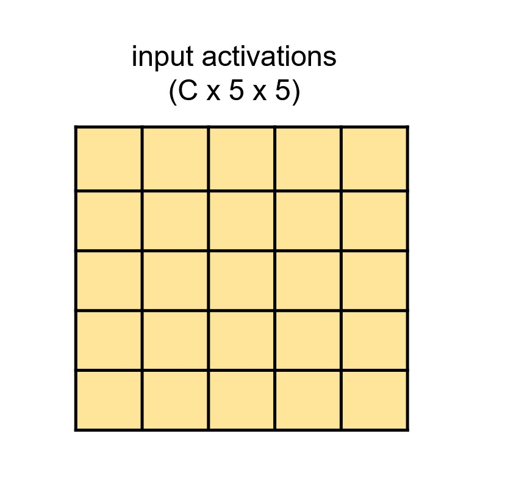

Convolutional Neural Networks
CAS Deep Learning - Computer Vision (Part1)
Properties of Image Data

- High-Dimensional: An RGB image of size \(224 \times 224\) has \(224 \times 224 \times 3 = 150{,}528\) values
- Locality: Nearby pixels are statistically related (edges, textures, objects)
- Stability under transformations: A cat should be recognized regardless of position
- Hierarchical Structure: Features at multiple scales (pixels → edges → textures → objects)
Multilayer-Perceptron and Images

MLPs deal with flat inputs: The spatial structure gets lost.
MLPs and High-Dimensional Inputs

Weight matrix \(\mathbf{W} \in \mathbb{R}^{d \times k}\) scales with input size (\(d\) = input dimensionality, \(k\) = number of neurons)
Columns of \(\mathbf{W}\) can be visualized as images to show what patterns each neuron learns
MLPs and Translations

MLP and pattern shifts
Often patterns appear at different positions (not stationary)
Ideally we want to recognize them under translations: \(g(\mathbf{x})\) where \(g()\) is a spatial translation
How do MLPs deal with this?
Example Invariance
Example where invariance is required:

When objects in the input translate spatially, the output (in this case the classification of the images) does not change. The model \(f(\mathbf{x})\) is thus invariant to spatial translations.
Example Equivariance
Example where equivariance is required:

When objects in the input (first row) translate spatially, the detections (bounding boxes) change accordingly (bottom row). The model \(f(\mathbf{x})\) that produces the bounding boxes is thus equivariant with respect to spatial translations.
History: Experiments on Cats

Illustration Source
Visual Cortex

Representation of transformations in the visual cortex. Source: Kubilius (2017)
Convolutional Neural Networks

The activations of a ConvNet architecture. The input image is on the left, and the predictions are on the right. Source: Li (2022)
Convolution on RGB Images

Source: Prince (2023)
\[\begin{equation} S(i, j) = (K * I)(i, j) = \sum_m \sum_n I(i + m, j + n) K(m, n) \end{equation}\]
- \(I\): Input (e.g., image)
- \(K\): Kernel (typically smaller than \(I\))
- Bias term \(b\) added to weighted sum
Convolutional Layers

Source: Johnson (2019)
Convolutional Layers

Source: Johnson (2019)
Convolutional Layers

Source: Johnson (2019)
Padding
Question: Output size when convolving with \(3\times3\) kernel?
Without padding:

With zero-padding:

Padding Effect

Left: Input (Yellow) with Zero-Padding (white border), Middle: Filter, Right: Output.
Key Use: Preserve spatial dimensions → essential for segmentation!
Stride = 1

Convolution with stride \((1, 1)\)
Kernel moves 1 pixel at a time → preserves spatial resolution
Stride = 2

Convolution with stride \((2, 2)\)
Kernel moves 2 pixels at a time → downsamples by factor of 2
Advantage: Learned downsampling (vs. fixed pooling)
Kernel-Size

Dilation

Why would we use dilation \(d \gt 1\)?
Stacking Convolutions

Receptive Field

Using a 5x5 kernel
Receptive Field

Using a 5x5 kernel and two layers
Receptive Field

Receptive Field

Downsampling
Spatial downsampling reduces resolution (H×W → H’×W’)
Options:
- Stride \(> 1\) (learned downsampling)
- Pooling layers (fixed operation)

Upsampling Methods

a) Duplicate, b) Max-Unpooling, c) Bilinear Interpolation. Source: Prince (2023)
Also: Transposed Convolutions (learnable upsampling)
Upsampling with Transposed Convolutions
More details in image segmentation!
1×1 Convolutions
Purpose: Change number of channels without spatial mixing
\((C_{in} \times H \times W) \rightarrow (C_{out} \times H \times W)\)
Use cases:
- Dimensionality reduction (bottleneck layers)
- Increase model depth without parameters explosion
- Cross-channel information mixing
Source: Prince (2023)
Global Average Pooling
Global Average Pooling is often an important component. It computes the average of the activations along the depth dimension, reducing activation maps from (C x H x W) to (C x 1 x 1). This is useful for directly modeling logits in a classification problem with C classes, enabling architectures that completely eliminate fully-connected layers.

Global Average pooling, input (left) and output (right).